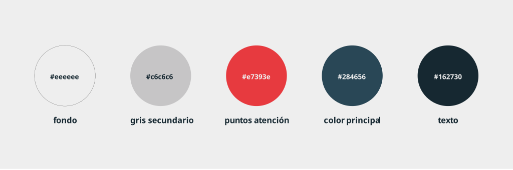
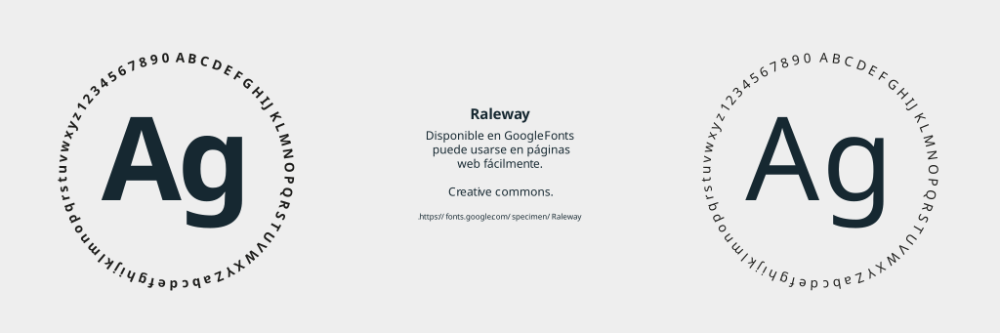

Brand
Selección de proyectos de identidad visual en contextos académicos y freelance, con un enfoque conceptual y experimental: el 25 aniversario de la Escola Serra i Abella, el barrio del Raval y una investigación sobre el constructo del género.
También incluye identidad y web para dos proyectos de la Universidad Politécnica de Cartagena, con sistemas gráficos flexibles y adaptables a distintos soportes.



